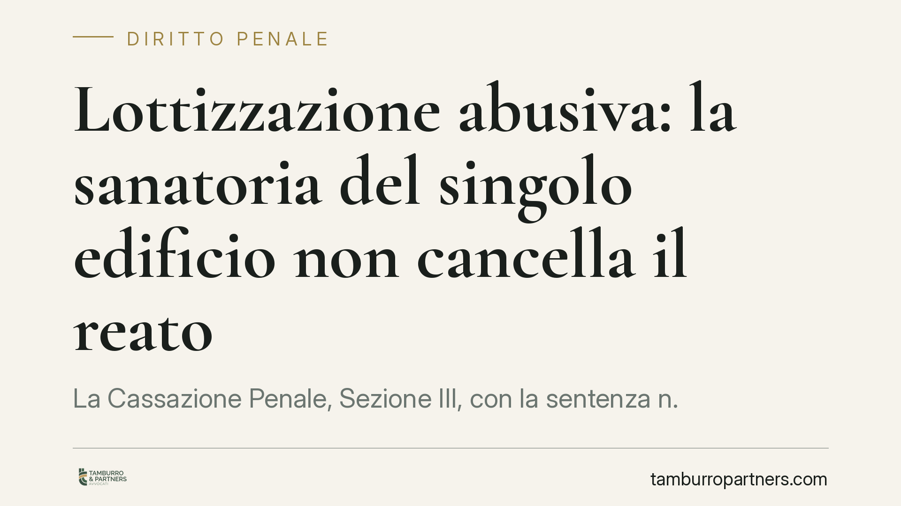

Lottizzazione abusiva: la sanatoria del singolo edificio non cancella il reato
La Cassazione Penale, Sezione III, con la sentenza n. 27220/2026, chiarisce un punto delicato: ottenere il permesso di costruire in sanatoria per un singolo manufatto non cancella il reato di lottizzazione abusiva, né impedisce il sequestro e la confisca del terreno frazionato illegalmente. Un principio che incide su chi acquista, edifica o subentra in aree oggetto di trasformazione urbanistica non autorizzata.

Il caso
La vicenda nasce dal frazionamento e dalla trasformazione di un terreno realizzati senza le necessarie autorizzazioni urbanistiche. L'interessato aveva poi ottenuto, per una singola opera edilizia, un permesso di costruire in sanatoria, confidando che ciò bastasse a chiudere la partita anche sul piano penale. Il Tribunale del riesame e, in ultima istanza, la Cassazione hanno respinto questa lettura, confermando sequestro e confisca del terreno.
Inquadramento normativo
La lottizzazione abusiva è disciplinata dall'art. 30 del D.P.R. 380/2001 (Testo Unico dell'Edilizia) e sanzionata penalmente dall'art. 44, comma 1, lett. c) dello stesso Testo Unico. In termini pratici, si ha lottizzazione abusiva quando un terreno viene trasformato a scopo edificatorio — mediante opere o attraverso frazionamenti e vendite che rivelano in modo inequivoco la destinazione a edificazione — in assenza della necessaria autorizzazione o in contrasto con gli strumenti urbanistici.
È un reato che tutela un bene diverso da quello del singolo abuso edilizio: non la regolarità del manufatto, ma il corretto assetto del territorio e la potestà pianificatoria del Comune. Proprio questa differenza spiega la decisione della Corte.
Il permesso in sanatoria (art. 36 D.P.R. 380/2001) opera su un piano distinto: interviene sulla singola opera edilizia che risulti conforme alla disciplina urbanistica sia al momento della realizzazione sia al momento della domanda (la cosiddetta "doppia conformità"). Non è invece uno strumento capace di legittimare a posteriori una trasformazione urbanistica dell'intera area avvenuta senza pianificazione.
Il principio affermato
La Cassazione ha ribadito che la sanatoria di un singolo edificio non estingue il reato di lottizzazione abusiva. La ragione è logica prima che giuridica: il permesso in sanatoria certifica la conformità di quel manufatto, ma non ricostruisce ex post la legittimità dell'operazione di frazionamento e trasformazione del suolo nel suo complesso.
Ne deriva che il sequestro preventivo e la confisca del terreno abusivamente lottizzato restano legittimi. La confisca urbanistica prevista dall'art. 44, comma 2, del Testo Unico colpisce infatti l'area e le opere abusivamente lottizzate, come misura volta a ripristinare l'assetto del territorio, e non viene meno per effetto della regolarizzazione di una porzione dell'intervento.
Implicazioni pratiche
Le conseguenze riguardano più figure.
Chi acquista un lotto in un'area già frazionata deve verificare non solo la regolarità del fabbricato, ma la legittimità urbanistica dell'intera operazione di lottizzazione: un permesso in sanatoria sul singolo immobile non mette al riparo dal rischio di sequestro e confisca.
Chi edifica o subentra come usufruttuario o costruttore non può considerare la sanatoria del proprio manufatto come una "quietanza" penale. Il reato di lottizzazione resta autonomo e la posizione va valutata con riferimento all'operazione complessiva.
Per i Comuni, la pronuncia conferma la tenuta degli strumenti repressivi anche di fronte a sanatorie parziali, rafforzando il presidio sulla pianificazione del territorio.
Va infine ricordato che il sequestro preventivo può essere disposto per prevenire l'aggravamento delle conseguenze del reato: la sanatoria di una parte non fa venir meno il pericolo che giustifica la misura sull'intera area.
Cosa fare in concreto
- Verificate la legittimità urbanistica dell'intera area, non solo del singolo fabbricato, prima di acquistare o edificare: richiedete la documentazione sul frazionamento e sugli strumenti urbanistici vigenti.
- Distinguete sanatoria edilizia e regolarità lottizzatoria: chiarite con un tecnico e un legale che il permesso ex art. 36 non copre il reato di lottizzazione abusiva.
- Acquisite certificati di destinazione urbanistica aggiornati e verificate l'esistenza di vincoli, procedimenti o provvedimenti in corso sull'area.
- In caso di sequestro o confisca, agite tempestivamente: i termini per l'istanza di riesame e per l'impugnazione sono brevi e la ricostruzione documentale è decisiva.
- Non rinviate la valutazione legale in fase di trattativa: un controllo preventivo costa meno di un contenzioso penale e patrimoniale.
Disclaimer
Contributo informativo a cura di Tamburro & Partners - Avv. Giuseppe Tamburro. Non costituisce parere legale.
Ogni condominio ha una storia a sé.
Se gestisci un'amministrazione e vuoi un confronto su una specifica questione condominiale, scrivi allo studio. Ti rispondiamo entro un giorno lavorativo.